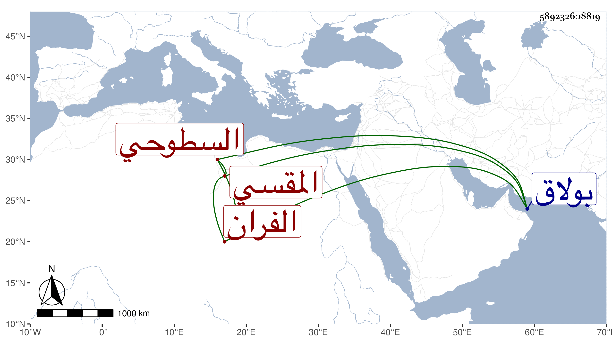

0902Sakhawi.DawLamic.ITO20230111-ara1.EIS1600.589232608819
Biography ID: 589232608819
أحمد بن خضر المقسي الفران السطوحي ويعرف بخروف . شيخ معتقد ممن يذكر بالجذب ويقصد للزيارة والتبرك به ويتكلم في حال صحوه بما يدل على فضل في الجملة . مات في يوم السبت سابع ذي الحجة سنة خمس وستين وكان بأخرة قد استوطن قرب جامع بلكتمر الشيخوني المعروف بالجامع الأخضر بطريق بولاق وعمرت له زاوية هناك فدفن بها . ذكره المنير وابن تغري بردي .
